その他の製品
�@ターンテーブルシート
TS-3
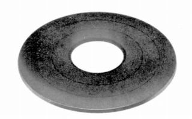
■価格 3,300円
■備考 ブチルゴム製
DP-5000(F)・3000・1000など用
TS-5
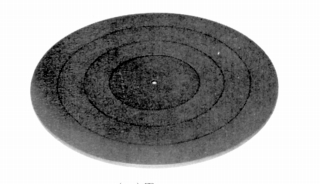
■価格 3,300円
■備考 ブチルゴム製
厚さ5�o 外径295�o 重量約500g。
DP-2000,6000,7000などや一般的なプレイヤーに適合。
�Aスタビライザー
AD-3
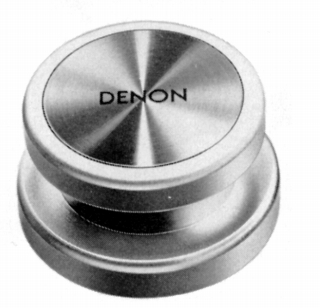
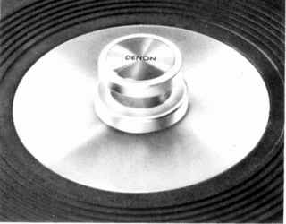
■価格 1,500円
■備考 小型スタビライザー
EPレコードアダプターとして使用可。
�Bクリーナー
AMC-10
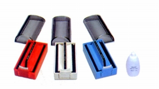
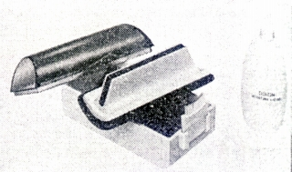
■価格 1,800円
■備考 間接式湿式クリーナー
別売り専用クリーニング液 AMC-10L
800円。
AV-C1
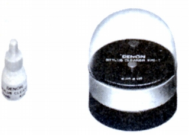
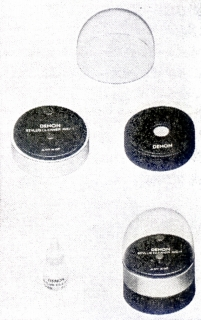
■価格 4,800円
■備考 電動式スタイラスクリーナー。
使用電池 SUM-5(単5形)
電池寿命 6時間以上
振動数 約400Hz
寸法 外径60�o
補充クリーニング液 AVC-1L
600円
�Cカートリッジ・キーパー
AS-3
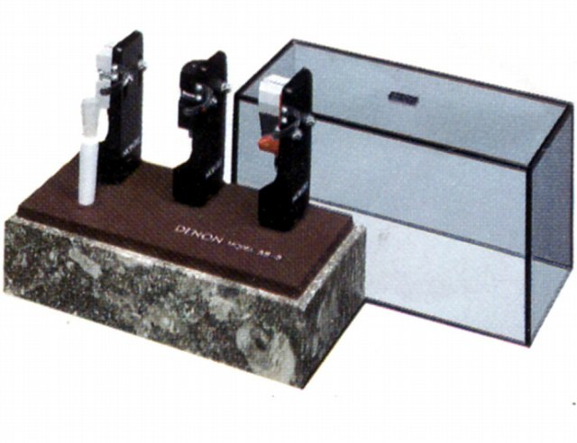
■価格 4,200円
■備考 貝化石天然大理石製。
�Dピックアップフィルター
PUF-1
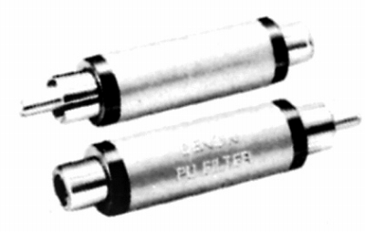
■価格 1,500円
■備考 2個1組。
DL-103Sなど45kHz以上の再生帯域を持つカートリッジで
CD-4用レコードを再生する場合、不要な45kHz以上の帯域を
カットするフィルターで4チャンネル復調時の雑音をカットする。
�EPCC（フォノ・クロストーク・キャンセラー)ユニット
PCC-1000
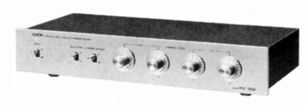
■価格 38,000円
■備考 調整用レコード付き。
良好な機種でも30dB台後半のカートリッジの
クロストークを40dB以上に改善するユニット。
どちらかというと、アンプのアクセサリー。
スペックからみて、MM及び昇圧後のMCポジション
を入力するらしい。
�Fオーディオ・チェック・レコード
OW-7401
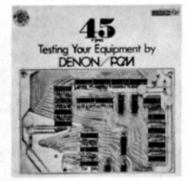 ■価格 1,500円 デンオンが実用化したPCM録音によるチェック・レコード。
■備考 45回転仕様。
その他に「PCM録音へのお誘い」というタイトルのレコードにも
チャンネルバランス、位相、周波数レンジ、基準レベル・チェック
用の信号が収録されて1,000円で発売されていた。